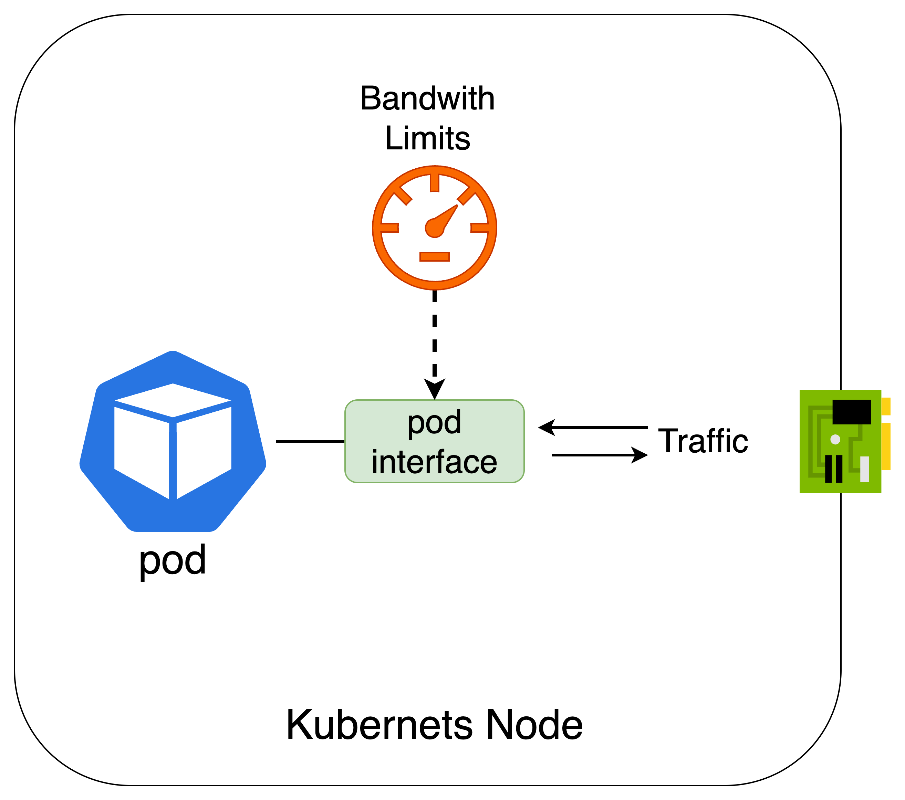

Lesson 12 · Pod annotations · Linux tc · iperf3
Calico Network QoS
给 Pod 带宽装上限速器
从无约束的 9.44 Gbit/s，到稳定在约 10 Mbit/s，沿着注解、veth 与 token bucket 看清每一步。
ingressBandwidth: 10MegressBandwidth: 10Mper-Pod limit
9.44G
Linux tc10Mtoken bucket
10M
burstsustained
Pod 注解给出目标速率，节点数据面负责执行
The noisy neighbor problem
一个 Pod 可以占满共享链路
共享 NIC / underlay容量有限
02
Two systems sharing one name
网络 QoS 与 Kubernetes QoS Class
Kubernetes QoS Class
根据 requests 和 limits 把 Pod 分为 Guaranteed、Burstable、BestEffort。
影响资源调度与驱逐优先级≠
Calico Network QoS
根据 Pod annotation 限制 bit rate、packet rate 或连接数，还能设置 DSCP。
影响网络数据面行为本课范围：只讨论 Calico 网络 QoS。CPU/内存 requests 与 limits 不会自动变成网络带宽保证。
03
Why cap network usage
带宽限制解决的四类问题
资源公平
限制单个 Pod 的最大速率，避免它长期独占共享链路。
成本控制
对备份、批处理或开发环境设置更低的出口上限。
性能隔离
给关键服务留下可用容量，降低突发大流量的干扰。
租户等级
不同租户或应用层级使用不同速率策略。
边界：限速是最大值约束，不等于保证最小带宽。物理链路拥塞时，配置 10M 也不承诺一定能达到 10M。
04
Pod metadata annotations
两条注解控制两个方向
metadata: annotations: qos.projectcalico.org/ingressBandwidth: "10M" qos.projectcalico.org/egressBandwidth: "10M"
ingressBandwidth
限制进入这个 Pod 的 bit rate。
egressBandwidth
限制离开这个 Pod 的 bit rate。
05
Direction is relative to the workload
ingress 与 egress 都以 Pod 为中心
ingressIN
egressOUT
eth0正向 iperf3
client egress 与 server ingress 都在路径上。
iperf3 -R
server egress 与 client ingress 都在路径上。
06
Bandwidth limits at the workload interface
课程原图：限速位于 Pod 接口

课程仓库：images/qos.png
07
containerlab/12-calico-qos
Lesson 12 的两节点拓扑
calico-qos-control-plane
Kubernetes API、CoreDNS、Calico 控制组件
Docker underlay
calico-qos-worker
课程示例中的 iperf3 Pod 都位于此节点
| 参数 | 课程值 | 说明 |
|---|---|---|
| Pod CIDR | 192.168.0.0/16 | Calico IPPool |
| Service CIDR | 10.96.0.0/16 | iperf Service VIP |
| blockSize | /26 | 节点 IPAM block |
| encapsulation | VXLANCrossSubnet | 跨三层子网才封装 |
08
custom-resources.yaml
CNI 与 IPPool 配置保持不变
apiVersion: operator.tigera.io/v1 kind: Installation metadata: name: default spec: calicoNetwork: ipPools: - blockSize: 26 cidr: 192.168.0.0/16 encapsulation: VXLANCrossSubnet natOutgoing: Enabled nodeSelector: all()
QoS 不需要单独 IPPool
限速绑定 Workload Endpoint，不改变 Pod 地址分配。
路由模式仍然生效
限速前后，包仍沿 Calico 的正常 Pod 路径转发。
数据面在节点内执行
annotation 变成 Linux 接口上的执行规则。
09
Automated setup
deploy.sh 先创建无 QoS 对照组
重建 topology
containerlab deploy导出 kubeconfig
calico-qos.kubeconfig安装 Calico
operator v3.30.0等待就绪
TigeraStatus Available部署基线 Pod
tools/01 + 02cd containerlab/12-calico-qos chmod +x deploy.sh ./deploy.sh export KUBECONFIG=$(pwd)/calico-qos.kubeconfig
QoS Pod 不在 deploy.sh 的初始部署中，课程要求在完成基线测试后手动应用 tools/03 和 tools/04。
10
Baseline pair and limited pair
四个 Pod 清单分成两组
iperf-client
sleep infinityiperf-server
iperf3 -s · Service 5201iperf-client-qos
ingress 10M · egress 10Miperf-server-qos
ingress 10M · egress 10M服务名：
iperf-server 与 iperf-server-qos 都监听 TCP 5201，分别指向自己的 server Pod。11
tools/01 and tools/02
无 QoS 的 iperf3 Server 与 Client
iperf-server
metadata: name: iperf-server labels: app: iperf-server spec: containers: - image: networkstatic/iperf3 command: ["iperf3", "-s"] ports: - containerPort: 5201
iperf-client
metadata: name: iperf-client labels: app: iperf-client spec: containers: - image: networkstatic/iperf3 command: ["sleep", "infinity"] # no qos annotations
12
tools/03 and tools/04
QoS 组只增加 annotations
apiVersion: v1 kind: Pod metadata: name: iperf-server-qos labels: app: iperf-server-qos annotations: qos.projectcalico.org/ingressBandwidth: "10M" qos.projectcalico.org/egressBandwidth: "10M" spec: containers: - image: networkstatic/iperf3 command: ["iperf3", "-s"]
仍是普通 Pod，无需 Calico CRD。
限速值写在 Pod metadata。
client-qos 使用完全相同的两条注解。
Service 仍只负责定位 server。
13
The measured path
iperf3 通过 Service 到达 Server Pod
client egress 10MTCP
ClusterIP → DNATTCP
server ingress 10MDNS
把服务名解析到 ClusterIP。
kube-proxy
把 VIP 连接 DNAT 到 Endpoint。
Calico QoS
在工作负载接口执行速率上限。
14
Exercise 1
节点与基线 Pod 必须先就绪
$ export KUBECONFIG=$(pwd)/calico-qos.kubeconfig $ kubectl get nodes -o wide calico-qos-control-plane Ready calico-qos-worker Ready
两台节点 Ready，Calico 组件 Available。
$ kubectl get pods -o wide iperf-client 1/1 Running 192.168.146.66 calico-qos-worker iperf-server 1/1 Running 192.168.146.65 calico-qos-worker
课程示例两端同节点，现场 IP 与调度以实际输出为准。
15
Exercise 2
先测没有限制时的最大吞吐
$ kubectl exec -it iperf-client -- \
iperf3 -c iperf-server -t 5-c iperf-server连接 Service DNS 名-t 5持续发送 5 秒TCP默认单流测试基线意义：先测当前环境可达到的吞吐，再判断 10M 限制是否真正生效。不同主机的绝对值不能直接横向比较。
16
No shaping on the workload
课程基线达到 9.44 Gbit/s
$ iperf3 -c iperf-server -t 5 Connecting to host iperf-server, port 5201 [ 5] local 192.168.146.66 connected to 192.168.146.65 [ ID] Interval Transfer Bitrate Retr [ 5] 0.00-5.00 sec 5.50 GBytes 9.44 Gbits/sec 0 sender [ 5] 0.00-5.00 sec 5.50 GBytes 9.44 Gbits/sec receiver
BASELINE9.44Gbit/s
课程示例，同节点容器路径
17
Exercise 3
手动创建带 10M 注解的 Pod
$ kubectl apply -f tools/03-iperf-server-qos.yaml $ kubectl apply -f tools/04-iperf-client-qos.yaml $ kubectl wait --for=condition=ready pod/iperf-server-qos --timeout=60s $ kubectl wait --for=condition=ready pod/iperf-client-qos --timeout=60s
Service: 5201sleep infinity等待 Ready 只能说明容器与探针状态正常，annotation 是否存在还要单独读取 metadata。
18
Exercise 4
先证明注解确实存在
$ kubectl get pod iperf-server-qos \ -o jsonpath='{.metadata.annotations}' | jq . { "qos.projectcalico.org/egressBandwidth": "10M", "qos.projectcalico.org/ingressBandwidth": "10M" }
YAML 期望
清单写了什么
Pod metadata
API 实际保存了什么
iperf / tc
数据面实际执行了什么
19
Desired state to kernel enforcement
注解到 tc 的下沉路径
Pod annotation
ingress / egress 10M
Kubernetes API
保存期望状态
Calico / CNI
识别工作负载 QoS
Linux tc
配置 qdisc / filter
Pod veth
发送、排队或丢弃
数据面原则：控制器不逐包转发。它负责写入配置，后续每个包由节点内核执行。
20
Workload veth pair
Pod eth0 与 host 侧 cali 接口
eth0应用看到的接口
veth pair
cali*Calico workload interface
# 在 Pod 所在节点确认接口与 qdisc ip -d link show | grep -A2 cali tc -s qdisc show dev <cali-interface> tc -s filter show dev <cali-interface> ingress
接口名由环境生成，不要把课程示例中的 cali 后缀写死。先关联 Pod、WorkloadEndpoint 与 Node。
21
Rate, tokens and burst
Token Bucket Filter 的三个量
补充速率10 Mbit/s
tokens最大容量决定 burst
每个包消耗 token有 token：发送无 token：排队或丢弃
22
Burst then steady state
突发消耗完后回到 10M
0s1s2s3s4s5s
准备开始
第 1 秒
桶中已有 token，允许较高突发，TCP 同时出现重传。
第 2 秒起
token 消耗完，吞吐稳定在约 10.5 Mbit/s。
23
Exercise 5
对 QoS 组执行同样的 5 秒测试
$ kubectl exec -it iperf-client-qos -- \
iperf3 -c iperf-server-qos -t 5same image仍然是 networkstatic/iperf3same duration仍然测试 5 秒changed variablePod 多了 10M annotation实验设计：保持工具、协议和测试时间一致，把 QoS annotation 作为主要变量。
24
Measured output
稳定区间落在约 10.5 Mbit/s
[ ID] Interval Transfer Bitrate Retr Cwnd [ 5] 0.00-1.00 sec 35.6 MBytes 299 Mbits/sec 46 754 KBytes [ 5] 1.00-2.00 sec 1.25 MBytes 10.5 Mbits/sec 0 754 KBytes [ 5] 2.00-3.00 sec 1.25 MBytes 10.5 Mbits/sec 0 754 KBytes [ 5] 3.00-4.00 sec 1.25 MBytes 10.5 Mbits/sec 0 754 KBytes [ 5] 4.00-5.00 sec 1.25 MBytes 10.5 Mbits/sec 0 754 KBytes [ 5] 0.00-5.00 sec 39.4 MBytes 66.0 Mbits/sec 46 sender [ 5] 0.00-5.00 sec 36.7 MBytes 60.4 Mbits/sec receiver
25
Interpret the first interval correctly
首秒高带宽不代表限速失效
2990–1s
10.51–2s
10.52–3s
10.53–4s
10.54–5s
开始时桶中有可用 token。
应用瞬间发得更快，消耗 burst。
桶空后只能按 10M 速率补充。
TCP 收敛，稳定区间接近配置值。
26
TCP adapts to shaping
46 次重传说明发送速度超过可用节奏
packetsDROP
ACK
Retr = 46
首秒出现重传。
Cwnd = 754 KB
课程输出中的拥塞窗口。
后续 Retr = 0
发送节奏适应约 10M 上限。
注意：限速会影响延迟、丢包和 TCP 拥塞控制。生产值应结合业务流量模型与 SLO 测试。
27
Reduce burst bias
30 秒测试更接近持续速率
突发占 20% 时间
平均值被第一秒明显抬高。
突发只占约 3%
整体平均更接近 10 Mbit/s。
kubectl exec -it iperf-client-qos -- \ iperf3 -c iperf-server-qos -t 30
正式验证还可以增加 -i 1 保留逐秒区间，必要时重复多轮并记录中位数。
28
Baseline versus shaped traffic
持续吞吐从 Gbit/s 降到约 10 Mbit/s
无 QoS
9.44 Gbit/s
QoS 10M
≈ 10.5 Mbit/s
| 测试 | 持续吞吐 | 执行方式 | 解读 |
|---|---|---|---|
| Baseline | 约 9+ Gbit/s | 无 QoS | 当前容器路径的可用上限 |
| QoS | 约 10 Mbit/s | Pod annotation + Linux tc | burst 结束后的持续速率 |
课程称约 1000 倍差距，这是示例环境的数量级对比，不应当作所有集群的固定倍率。
29
Validate server egress and client ingress
反向测试覆盖另外两个方向
ingress 10MDATAiperf3 -R
egress 10Mkubectl exec -it iperf-client-qos -- \ iperf3 -c iperf-server-qos -t 30 -R
覆盖矩阵：正向测试验证 client egress + server ingress，反向测试验证 server egress + client ingress。
30
Per workload endpoint
每个 Pod 可以有不同上限
开发环境与低优先级任务
普通业务副本
高吞吐服务
精细控制
限制绑定 Pod/WorkloadEndpoint，不需要整节点统一一个值。
模板化
在 Deployment/StatefulSet 的 Pod template annotations 中配置，重建副本自动继承。
31
Exercise 7
课程用删除 QoS 组恢复基线
删除 QoS Pod 与 Service
kubectl delete pod iperf-server-qos iperf-client-qos kubectl delete service iperf-server-qos
回到原始基线组
kubectl exec -it iperf-client -- \ iperf3 -c iperf-server -t 5
吞吐恢复
约 Gbit/s再次证明基线 Pod 从未带 QoS 限制。
这一步删除的是独立 QoS 对照组，不会把 annotation 从原始基线 Pod 上“撤掉”，因为基线 Pod 本来就没有这些注解。
32
Keep lab behavior and current docs separate
课程流程与新版 Calico 更新语义
课程按创建时注解演示
独立创建 QoS Pod，移除时直接删除整组对象，再测试原始基线 Pod。
focus: reproducible lab comparison原生 Calico 限速支持即时更新
最新官方文档说明 Calico 原生注解可立即生效，旧 Kubernetes bandwidth plugin 语义不同。
qos.projectcalico.org takes precedence演示建议：本地环境按课程步骤执行；解释生产行为时同时核对正在运行的 Calico 版本与数据面模式。
33
Current official annotation set
新版 Calico QoS 不只限制带宽
| 控制项 | Ingress | Egress | 用途 |
|---|---|---|---|
| Bandwidth | ingressBandwidth | egressBandwidth | 限制平均 bit rate |
| Packet rate | ingressPacketRate | egressPacketRate | 限制 packets/s |
| Connections | ingressMaxConnections | egressMaxConnections | 限制已建立连接数 |
| DiffServ | — | dscp | 标记 DSCP，供上游设备分类 |
课程页面补充表中的 ingressPackets / egressPackets 名称不应直接照搬。当前官方文档使用 ingressPacketRate 与 egressPacketRate。
34
Current bandwidth tuning knobs
Burst 与 Peakrate 分别控制容量和峰值
metadata: annotations: qos.projectcalico.org/egressBandwidth: "100M" qos.projectcalico.org/egressBurst: "200M" qos.projectcalico.org/egressPeakrate: "300M" qos.projectcalico.org/egressMinburst: "1500"
课程未显式配置 burst 或 peak rate。不要从一次 5 秒输出反推通用默认值；默认值与实现语义应按正在使用的版本文档确认。
35
Find the first broken link
沿配置、接口与测量逐层排查
Pod annotation
kubectl get pod -o yaml名称、大小写、单位是否正确。
Node 与接口
kubectl get pod -o wide进入正确节点，定位对应 cali 接口。
tc 状态
tc -s qdisc / filter看规则、bytes、packets 与 drops。
测试方向
iperf3 / iperf3 -R正向和反向对应不同 ingress/egress。
测试时长
-t 30 -i 1避开只看首秒 burst 的误判。
数据面版本
calico-node logseBPF 模式还要确认内核与 tcx 支持。
36
Evidence from API to kernel
十五分钟 QoS 演示顺序
kubectl get nodes,pods -o wide确认两节点和基线 Podiperf3 -c iperf-server -t 5记录无约束基线kubectl apply -f tools/03...创建 QoS serverkubectl apply -f tools/04...创建 QoS clientkubectl get pod ... | jq确认两条 annotation
iperf3 -c iperf-server-qos -t 5读逐秒结果iperf3 ... -t 30观察持续速率iperf3 ... -t 30 -R验证反向路径tc -s qdisc / filter查看内核统计./destroy.sh清理 topology
讲解顺序：每次先说“正在验证哪条 annotation 和哪个方向”，再执行命令并读稳定区间。
37
Summary and sources
从 annotation 到稳定吞吐的证据链
配置
Pod annotation 分别描述 ingress 与 egress 上限。
执行
Calico/CNI 将期望状态下沉到 Linux tc 和工作负载接口。
测量
iperf3 逐秒结果显示 burst 后稳定在约 10.5 Mbit/s。
边界
最大速率限制不等于最小带宽保证，生产语义取决于版本。
38